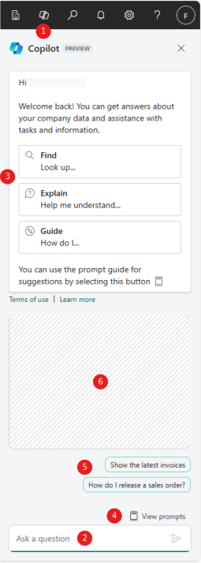

Chat mit Copilot (Vorschauversion)
[!INCLUDE [preview-banner](~/../shared-content/shared/preview-includes/preview-banner.md)]In diesem Artikel wird beschrieben, wie Sie mit Copilot chatten, um Antworten zu Ihren Unternehmensdaten und Unterstützung bei Aufgaben und Themen im Zusammenhang mit Business Central zu erhalten.
[!INCLUDE [preview-note](~/../shared-content/shared/preview-includes/production-ready-preview-dynamics365.md)]Über den Chat mit Copilot
Microsoft Copilot ist der KI-gestützte Assistent, der dabei hilft, Kreativität freizusetzen, die Produktivität zu steigern und mühsame Aufgaben zu eliminieren. Indem sie in Business Central mit dem Copiloten chatten, können Sie mithilfe natürlicher Sprache Fragen stellen und Geschäftsdaten suchen. Sie haben folgende Möglichkeiten:
- Suchen Sie in Business Central nach Geschäftsdaten für Ihr Unternehmen. Verwenden Sie den Chat, um Daten zu Entitäten/Datensätzen im Zusammenhang mit Geschäftsprozessen wie Debitoren, Kreditoren, Verkaufsaufträgen, Artikeln und mehr zu suchen (und zu öffnen). Fordern Sie Copilot zum Beispiel auf: „Zeige mir den neuesten Verkaufsauftrag für Adatum.“
- Erhalten Sie Erklärungen oder Schritt-für-Schritt-Anleitungen zu verschiedenen Aufgaben. Geben Sie zum Beispiel ein: „Hilf mir, die Dimension zu verstehen“ oder „Wie buche ich einen Verkaufsauftrag?“
- Den Zweck und die typische Verwendung einzelner Felder zu verstehen. Wenn Sie in einer QuickInfo für ein Feld die Option Copilot fragen auswählen, wird der Chat mit einer Erläuterungsaufforderung für den Feldnamen geöffnet und Copilot stellt Informationen dazu bereit. Copilot verlinkt auf die Artikel, auf die es verwiesen hat, sodass die Beschreibung leicht überprüft werden kann.
Die Antworten von Copilot basieren auf den offiziellen Informationen, die auf Microsoft Learn unter Dynamics 365 Business Central-Dokumentation verfügbar sind.
Durch die Verwendung der Chatfunktion mit Copilot wird Ihr Arbeitsablauf optimiert, indem die herkömmliche Navigation und Produkthilfe umgangen wird.
Voraussetzungen
- Stellen Sie sicher, dass die Chatfunktion mit Copilot von einem Administrator aktiviert wurde. Erfahren Sie mehr über das Konfigurieren von Copilot- und KI-Funktionen.
- Legen Sie Ihre Anzeigesprache in Business Central auf eines der folgenden englischen Gebietsschemas fest: en-AU, en-CA, en-GB, en-IE, en-IN, en-NZ, en-PH, en-SG, en-US, en-ZA. Erfahren Sie mehr über das Ändern der Sprache.
- Stellen Sie sicher, dass sich Ihre Business Central-Umgebung in einem beliebigen Land bzw. einer beliebigen Region außer Kanada (dieses Feature ist in Kanada noch nicht verfügbar) befindet.
Erste Schritte mit dem Chat mit Copilot
Wählen Sie in der oberen rechten Ecke des Bildschirms das Copilot-Symbol .
Der Bereich Copilot wird, wie in der folgenden Abbildung dargestellt, angezeigt:

Geben Sie unten im Feld Eine Frage stellen Ihre Frage ein und wählen Sie dann den Pfeil aus oder drücken Sie Eingeben, um eine Antwort zu erhalten.
Ihre Eingabe, auch als Eingabeaufforderung bezeichnet, kann eine Frage, eine Aussage oder ein Befehl sein.
Tipp
Copilot enthält einige Features, die Ihnen beim Verfassen von Fragen helfen können:
- Um Fragen einfacher formulieren zu können, wählen Sie eine der Anleitungen für Prompts – Finden, Erklären oder Anleitung – am oberen Rand des Fensters oder das Prompts anzeigen-Symbol über dem Feld Eine Frage stellen aus . Anleitungen für Prompts sind vordefinierte kurze Sätze, die eine Frage oder einen Prompt einleiten. Sie sparen Zeit, lenken die Antworten von Copilot in eine bestimmte Antwortkategorie und vermitteln Ihnen die richtige Frageformulierung, um die besten Antworten zu erhalten.
- Wählen Sie die Prompt-Vorschläge über die Schaltfläche Prompts anzeigen , um automatisch eine vordefinierte Frage zu stellen und so die Funktionsweise der Fragen und Antworten kennzulernen. Prompt-Vorschläge sind nur verfügbar, wenn Sie das CRONUS-Demounternehmen verwenden.
Die im Copilot-Bereich angezeigten Antworten überprüfen .
Je nach Ihrer Frage kann die Antwort Text, Links zu Datensätzen oder Seiten in Business Central sowie Links zu Business Central-Hilfeartikeln auf Microsoft Learn enthalten.
Stellen Sie eine weitere Frage, um die Antwort zu verfeinern.
Der Chat merkt sich den Kontext, sodass Sie wichtige Punkte der ursprünglichen Frage nicht wiederholen müssen.
Chat löschen, um neu zu starten
Wenn Sie mit Copilot zu einem anderen Gesprächsthema wechseln möchten, wählen Sie das aus Symbol Eine neue Copilot-Chatsitzung starten unten im Copilot-Bereich über dem Fragefeld aus. Diese Aktion löscht Ihre letzten Nachrichten aus dem Speicher von Copilot. Nach einer langen Unterhaltung mit vielen Nachrichten ist es oft hilfreich, von vorne zu beginnen. Dies kann Copilot dabei helfen, genauere Antworten zu geben.
Der Chat wird auch gelöscht, wenn Sie Business Central schließen oder sich abmelden.
Tipps für bessere Fragen
Hier sind einige Möglichkeiten, wie Sie die Antworten von Copilot verbessern können:
- Stellen Sie klare und konkrete Fragen.
- Seien Sie prägnant und vermeiden Sie lange oder mehrere Sätze.
- Stellen Sie immer nur eine Frage auf einmal.
- Verwenden Sie eine natürliche Sprache und formulieren Sie Ihre Fragen freundlich und im Plauderton.
- Verwenden Sie Schlüsselwörter, Phrasen und Begriffe, von denen Sie wissen, dass sie in Business Central entweder in der App oder in der Dokumentation verwendet werden.
- Wenn die erste Antwort Ihre Fragen nicht vollständig beantwortet, stellen Sie Folgefragen oder formulieren Sie die letzte Frage um.
- Wenn Sie eine Frage zu einem anderen Thema als die bisherige Unterhaltung stellen möchten, löschen Sie die aktuelle Chatsitzung und beginnen Sie von vorn.
Beispiele für Prompts
Ihre Fragen an Copilot hängen von Ihrer Rolle, Ihren aktuellen Aufgabe, den Prozessen, die Ihre Organisation verwendet, und Ihrer Ausdrucksweise ab. Im Folgenden finden Sie Beispiele für verschiedene Möglichkeiten zum Stellen von Fragen im Chatbereich. Sie sollen Sie dazu inspirieren, eigene, an Ihre Situation angepasste Fragen zu verfassen.
Prompt: Find the Item with Description 'ATHENS Desk'
In diesem Beispiel geben Sie Copilot klare Anweisungen zum Auffinden eines einzelnen Datensatzes. Sie weisen beispielsweise darauf hin, dass der Datensatz in der Artikelliste zu finden ist. Sie geben an, dass das Feld „Beschreibung“ einen bestimmten Text enthalten muss, den Sie mit Anführungszeichen und korrekter Groß- und Kleinschreibung angegeben haben. Copilot antwortet normalerweise korrekt, wenn ihm ein paar präzise Hinweise gegeben werden. Sie können aber auch lockerere Formulierungen wie im nächsten Beispiel verwenden.
Prompt: Give me the latest invoice for adatum
In diesem Beispiel bitten Sie Copilot, einen Datensatz zu suchen, die Frage ist jedoch weniger präzise und führt möglicherweise zu einer weniger genauen Antwort. Copilot versteht oder rät häufig richtig, dass es sich bei der gesuchten Rechnung nicht um eine Einkaufsrechnung, sondern um eine Verkaufsrechnung aus der Liste der gebuchten Verkaufsrechnungen handelt. Copilot müsste außerdem adatum der Adatum Corporation zuordnen, d. h. dem vollständigen und genauen Namen des mit der Rechnung verknüpften Debitores.
Prompt: Show me customer ledger entries for Adatum from about three weeks ago
In diesem Beispiel bitten Sie den Copiloten, ein häufiges Datumsproblem zu lösen, für das Sie normalerweise einen Kalender öffnen oder erweiterte Datumsbereichsfilter verwenden müssen. Copilot versteht in der Regel gängige Ausdrücke und wirtschaftliche Begriffe.
Prompt: How does I save my filterrings for later?
In diesem Beispiel bitten Sie Copilot um Anleitung zur Erledigung bestimmter Aufgaben in Business Central. Copilot versteht normalerweise, welche Absicht Sie mit der Frage verfolgen, selbst wenn sie einige Grammatikfehler, Rechtschreibfehler oder Abkürzungen enthält.
Feedback zu Antworten geben
Sie können die Antworten, die Sie von Copilot erhalten, bewerten, indem Sie für eine gute Bewertung die „Gefällt mir“-Schaltfläche (Daumen hoch) und für eine schlechte Bewertung die „Gefällt mir nicht“-Schaltfläche (Daumen runter) verwenden. Wenn Sie auf die Schaltfläche „Gefällt mir nicht“ klicken, können Sie einen Grund auswählen, z. B. „ungenau“, „unangemessen“ oder „Sonstiges“. Diese Informationen können helfen, Vorschläge zu verbessern.